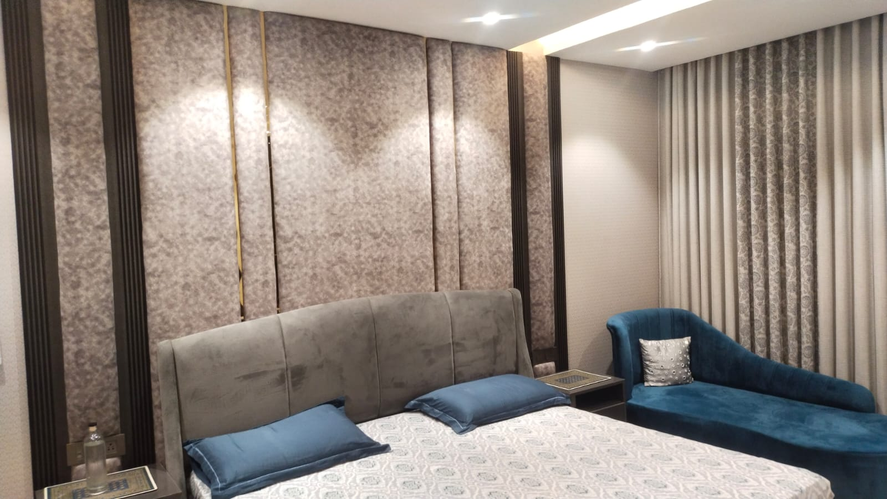
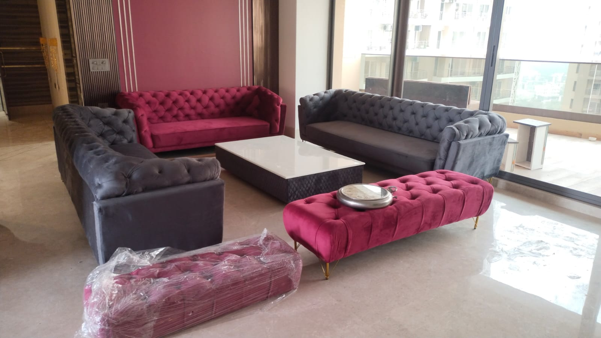
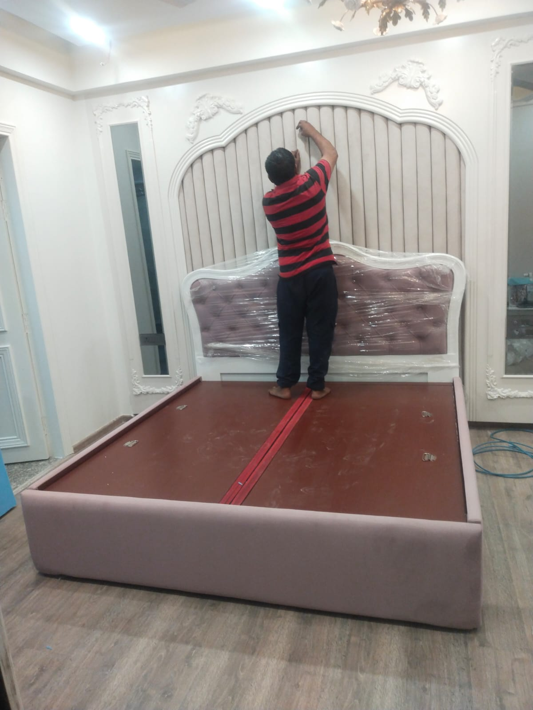
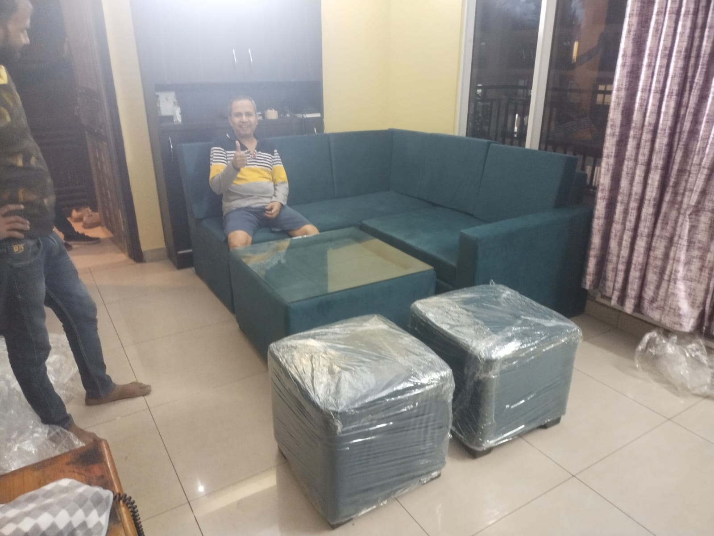
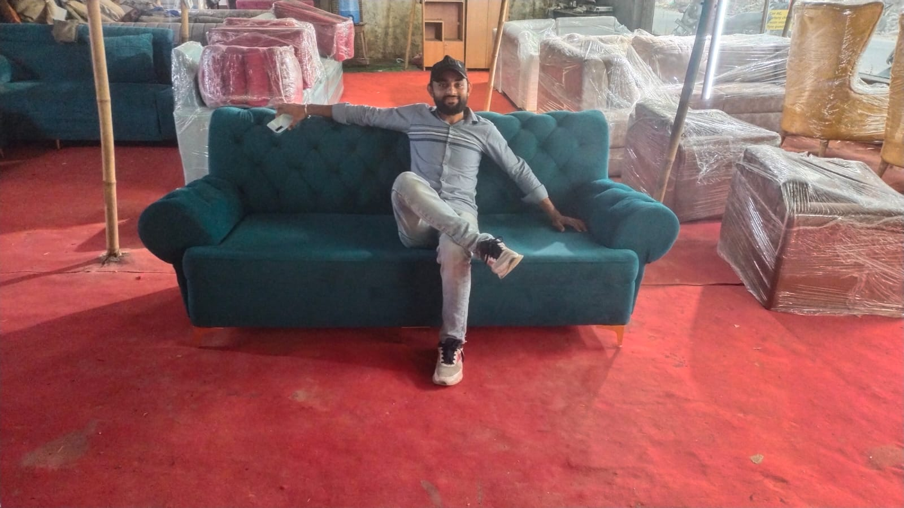
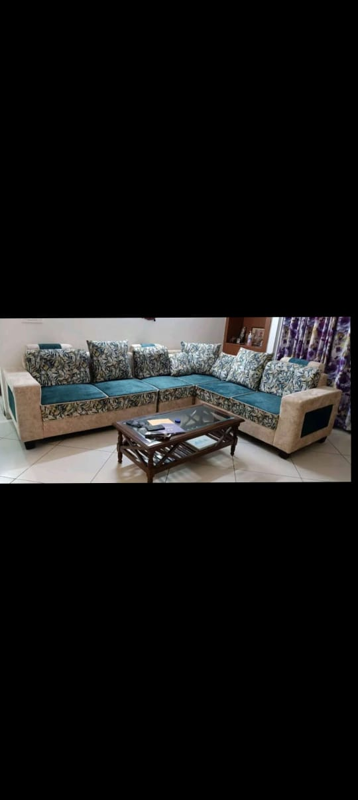
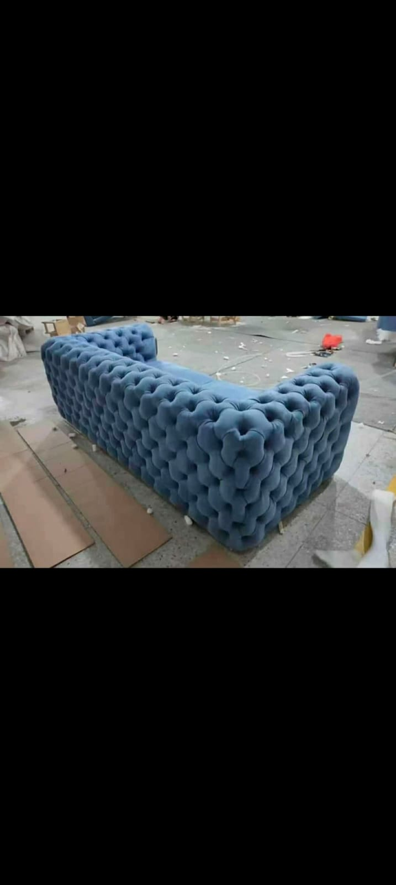
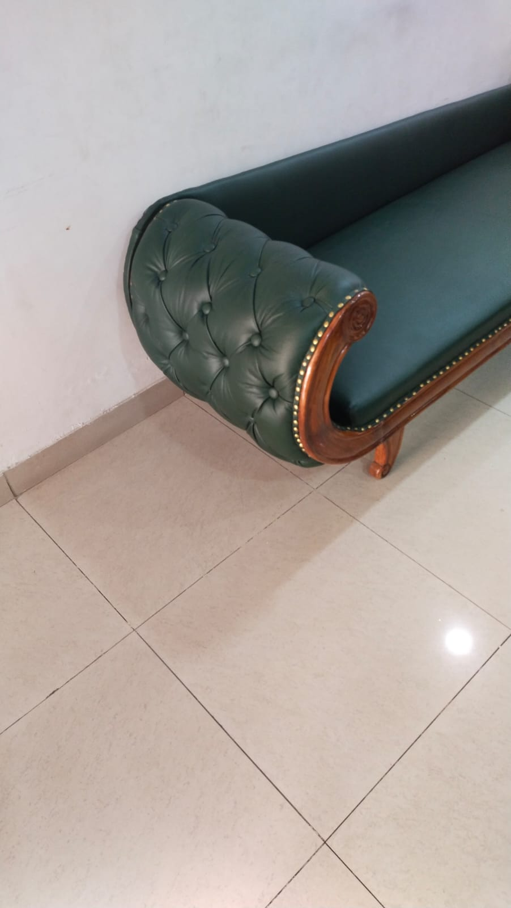
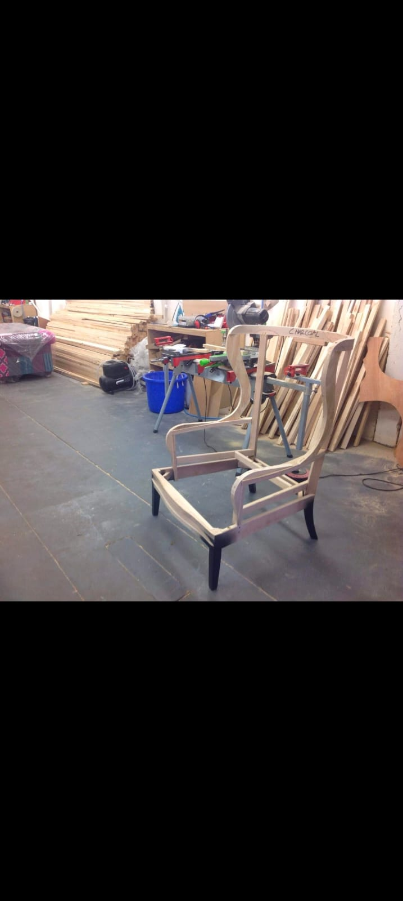

Welcome to NS Furniture, your trusted local sofa shop in Noida. We specialize in custom-made sofas, handcrafted sectionals, sagging cushion repair, and complete upholstery restoration. Serving residential and commercial clients across Noida, Greater Noida, Ghaziabad, Delhi, and Gurgaon with doorstep inspection and pickup. Contact us for an exact estimate.





At NS Furniture, we are proud to be one of the premier custom sofa makers and furniture repair workshops serving Noida, Greater Noida, and Delhi NCR. We believe that well-crafted furniture is an investment in comfort and aesthetic elegance. Instead of replacing worn-out pieces with flimsy mass-market alternatives, our artisans strip them down to their frameworks and rebuild them with superior high-density cushioning, robust webbing, and premium upholstery fabrics.
Our workshop handles everything from made-to-order L-shape sectionals and Chesterfield suites to structural frame reinforcement, wood PU polishing, and antique restoration. We offer convenient doorstep consultation, fabric swatches selection, and pickup & delivery across all Noida sectors.
Professional inspection, custom manufacturing, and restoration solutions. Contact us for an exact estimate.

Fixing sagging seats, replacing broken zigzag springs, reinforcing internal timber joinery, and restoring seat elasticity with 40-density foam.
Learn More
Complete reupholstery using premium stain-resistant velvet, linen, suede, and leatherette materials tailored to your home decor.
Learn More
High-gloss, semi-matte, and natural Melamine, PU polish, and hand-rubbed wax coatings that restore wooden tables, chairs, and beds.
Learn More
Fixing structural wobbles, chipped veneer, loose tenon joints, termite damage, and broken legs in dining sets, beds, and wardrobes.
Learn MoreWe use high-grade components to build and rebuild durable furniture from the inside out.
Drag the slider handle below to see the results of our custom restorations.
Feedback from clients who have restored their custom furniture with us.
We offer convenient doorstep inspection, fabric swatch consultations, and careful pickup & delivery across all key sectors and neighboring hubs.
Sector 18, Sector 50, Sector 62, Sector 76, Sector 78, Sector 104, Sector 128, Sector 137, and all major residential societies along Noida Expressway.
Gaur City 1 & 2, Greater Noida West, Knowledge Park, Pari Chowk, Techzone 4, and Surajpur with daily pickup and delivery routes.
Indirapuram, Vaishali, Vasundhara, Crossing Republik, Raj Nagar Extension, and Kaushambi with swift doorstep repair consultations.
East Delhi (Mayur Vihar, Laxmi Nagar), South Delhi (Saket, GK), and select Gurgaon residential townships for bespoke custom projects.
Find answers to common queries about our furniture repair, polishing, and custom woodwork services.
Furniture repair pricing depends on the furniture condition, material, size and work required. Contact NS Furniture for an exact estimate.
You can easily get a quote by sharing photographs of the damaged furniture with us on WhatsApp or Email. We'll send an estimate quickly.
Yes, we handle structural sagging, spring replacements, joint reinforcement, and cushioning renewal for all sofa styles across Noida and Delhi NCR.
Yes, we offer custom sofa upholstery work with premium fabrics like velvet, suede, and leatherette to match your home interiors.
Yes, wobbly frames, cracks, and peeling wood can be restored. We perform expert melamine and PU polishing to reveal natural grain beauty.
Yes, we repair office chairs, dining chairs, armchairs, wooden tables, and study desks, resolving wobbly joints and polishing scratches.
Yes, we fix creaking bed frames, hydraulic lifting mechanisms, wardrobe track alignments, and cupboard hinge issues.
We provide pickup, restoration, and delivery services for clients across Noida, Delhi NCR, Gurgaon, Ghaziabad, and nearby regions.
Send us pictures of your furniture on WhatsApp or email to get a clean estimate within hours.